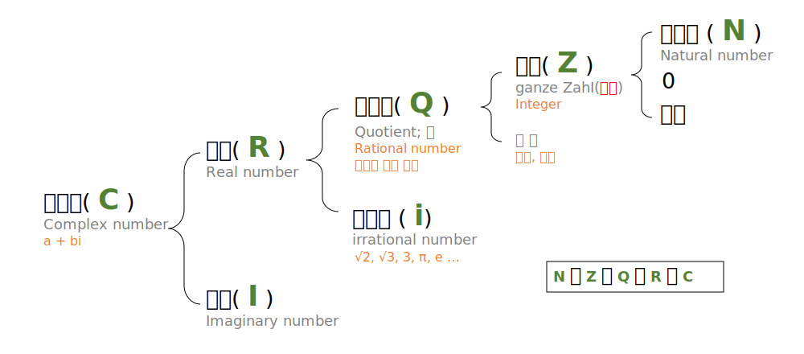
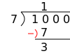

다항식polynomial
상수invariable, 변수variable, 함수function 그 다음은?
클라스가 다르다. 먼치킨이다. OP(overpower)다. 두 대상의 차이가 현격할 때 사용될 수 있는 말입니다. 적어도 이 표현들은 적어도 두 대상이 같은 공간에 존재할 수 있다는 뜻을
나타냅니다. 수학에는 이보다 더 큰 차이를 나타내는 말이 있습니다. 바로 '차원dimension이 다르다'는 말입니다. 애초에 이해가 불가능하리만큼 아득한 차이가 있을 때 사용할 수
있습니다. 수학적으로 (상)수는 점(0차원), 변수는 선(1차원), 함수는 면(2차원)에서 표현이 됩니다. 작은 차원에서는 더 큰 차원을 만질수도, 심지어 볼 수도 없습니다.
그렇다면 함수보다 더 더 강력한 것은 없을까? 변수는 점을 재료로 하며, 함수는 변수를 재료로 합니다. 그렇다면 함수를 재료로 하는 것은 없을까? 우리는 이 질문에 답을 하기 이전에 함수에 관해서 완전히 이해해야 합니다. 그래야 어나더 레벨로 올라 갈 수 있습니다.
이 장에서는 함수에 대해 알아봅니다.
그렇다면 함수보다 더 더 강력한 것은 없을까? 변수는 점을 재료로 하며, 함수는 변수를 재료로 합니다. 그렇다면 함수를 재료로 하는 것은 없을까? 우리는 이 질문에 답을 하기 이전에 함수에 관해서 완전히 이해해야 합니다. 그래야 어나더 레벨로 올라 갈 수 있습니다.
수체계

를 배우면서 따라오는 것이 수 쪼개기입니다. 20은 어떠한 수로 이루어져 있나요? \( 20=2^2 \times 5 \)라고 배웁니다. 그렇다면 왜 쪼개기를 했나요? 약분이 쉬워지기 때문입니다. 단순하게
표현하는 것은 대상을 이해하기 쉽고, 전달하기 쉽게 만들어줍니다.이 장에서는 함수에 대해 알아봅니다.
용어
항term: 곱으로만 이루어진 식
계수coefficient: 항에서 상수부분
다항식polynomial: 여러항으로 이루어진 식(반: 단항식)
차수degree: 변수에 붙은 지수. (다항식에서: 가장 높은 차수)
상수항constant term: 상수로만 이루어진 항
동류항similar term: 차수가 같은 항
집착
어쨌든 가장 간편하게, 그리고 같은 식이라면 누구나 똑같은 방법으로 표현하기 위한 방법을 제시합니다.- 높은 차수부터 내림차순으로 정리합니다.
- 동류항끼리 모아서 정리합니다.
사칙연산
덧셈뺄셈 동일
동류항이 있으면 동류항끼리 연산을 합니다. 만약 연산하고자하는 상대방에 동류항이 없으면 그대로 연산합니다. $$ x^2 + 2x^2 = 3x^2$$ $$ ({\color{red}{-2}}x^3 +2x -1)+({\color{red}4}x^3 -2x^2 +3x-5) = {\color{red}2}x^3 -2x^2+5-6$$곱셈
분배법칙을 사용합니다. 다항식의 곱을 연산할 때, 다항식의물성
이 완전히 해체되어 새로운 다항식을 만들어냅니다. 다항식의 곱은 분배법칙을 사용합니다. 분배법칙을 이용하여 두 개 이상의 식을 하나의 식으로 표현할 때
"전개"한다고 합니다.
식의 물성이란 식이 가지고 있는 고유의 성질을 의미합니다.

자주 사용하게 되는 곱셈공식은 다음과 같습니다. 물론 외울 필요는 없습니다. 일반적으로 \( {1 \over 2} = 0.5\) 이나, \( {1 \over 4} = 0.25\) 을 외우진 않습니다만, 살다보면 \(0.75\)나 \(0.125\), \(0.0625\)와 같은 숫자가 분수로 얼마인지 외우고 있을 때가 있습니다. 이 숫자들을 외우고 있지 않다고 해서 절대 연산이 느리다고 할 수도 없거니와, 외우고 있으면 아주 특정 상황에서 빠를 순 있어도, 수학을 잘 한다거나 못 한다고 이야기 할 수는 없을 것입니다. 눈으로 쓱 훑어보면서 나중에 얼마든지 전개 할 수 있다고 생각되면 넘어가도 됩니다. 어디까지나 자주 보다보니 외우게 되는게 일반적입니다. 당연하게도 자주 안보면 잊어버립니다. 외우라고 강요하는 사람이 이상한 사람입니다.
$$ (a+b)^2 = a^2+2ab+b^2 $$
$$ (a+b)(a-b)=a^2+b^2 $$
$$ (x+a)(x+b)=x^2+(a+b)x+ab $$
$$ (ax+b)(cx+b)=acx^2+(ad+bc)x+bd $$
$$ (a+b+c)^2=a^2 + b^2 + c^2 + 2(ab+bc+ca) $$
$$ (a+b)^3=a^3 + 3a^2b + 3ab^2 + b^3 $$
$$ a^3 + b^3 = (a+b)(a^2-ab+b^2) $$
$$ a^3 - b^3 = (a-b)(a^2+ab+b^2) $$
$$ (a+b+c)(a^2+b^2+c^2-(ab+bc+ca)) = a^3+b^3+c^3 -3abc $$
$$(a^2+ab+b^2)(a^2-ab+b^2)=a^4+a^2b^2+b^4 $$
조립제법
나눗셈을 한다고 가정해봅시다. 나눗셈은 무엇입니까? 1000 ÷ 7을 해 볼까요?

우리는 당연하게 빼기를 하고 있습니다. 사실은...$$ 1000 -700 - 70 - 70 - 70 - 70 - 14 = 6 $$ $$ 1000 \div 7 = 142 \dots 6 $$ $$ 1000 = 7 \times 142 + 6 $$ 나누기란 뺄셈입니다. 그런데도 곱셈의 역순이라고 잡아뗄끼가? 당신이 말하는 곱셈. 원래 덧셈을 외웠던거 아니야? 진짜 나눗셈을 해라. 그게 애국이야(?)... 미안합니다.
그러면 \( (3x^3+4x^2-5) \div (x+2) \) 를 계산해 봅시다.
위 방법대로 수식을 정리하면 다음과 같습니다. $$ (3x^3+4x^2-5) \div (x+2) = 3x^2 - 2x + 4 \dots-13$$ 이를 일반식으로 표현하면 다음과 같습니다. $$ (3x^3+4x^2-5) = (3x^2 - 2x + 4)(x+2) -13$$
일반식은 다음과 같습니다.이 방법을 조립제법이라고 합니다. 그렇다면 조립제법은 만능일까요? 네, 그렇습니다. 나눗셈 하는데 안 될게 있겠습니까? 다만, 이유는 모르겠지만 몫의 방향이 기존에 [위]에서 [아래]방향으로 바뀌었기 때문에 "제수가 1차식 아니면 안되는 것 아니야?"라는 생각을 할 수도 있습니다. 저는 아직까지도 왜 조립제법을 아랫방향에서 수행하는지 불만입니다. 제수가 1차식이 아니어도 할 수 있습니다. 예를 들어 \( (x^4 + 3x^3 - 2x + 6) \div (x^2 - x +1) \)을 계산해 보겠습니다.
$$ A_{피제수} = Q_몫 B_{제수} + R_{나머지} $$ $$ A(x) = Q(x) B(x) + R(x) $$
조립제법을 하기 위해서는 제수의 최고차항이 1이어야 한다는 단점이 존재합니다.
- \(A\)를 \(B\)로 나누면 \(Q\)가 나온다. 나는 \( Q \)를 알고 싶다.
- 조립제법을 사용하고 싶어서, \( B \)가 아닌 \( B \times k \)를 사용할 것이다.
- \(B'\)으로 나누면, 잘은 모르지만 어쨌든 \( Q \)랑은 다른 \(Q'\)이 나올 것이다.
- \(B\)에다가 어떤 수 \(k\)를 곱한 숫자로 나눈다면,
- \(Q'\)(=결과)는 아래 식의 이유로 \( {Q}\over{k} \)가 출력될 것이다.
- 따라서, 결과(\( Q' \))에 \( k \)를 곱하면 \( Q \)를 얻을 수 있다.
$$ \begin{aligned} Q' &= 4x -4 \\ Q &= {1\over2} (4x+4) \\ &= 2x+2 \end{aligned} $$ 따라서, 결과는 다음과 같습니다. $$ (4x^2-2x+3) \div (2x+1) = 2x+2 \dots 5 $$